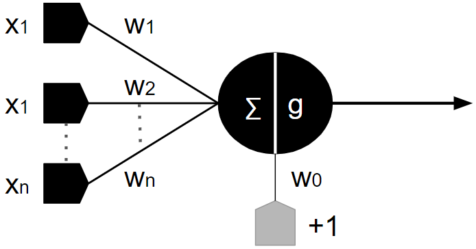
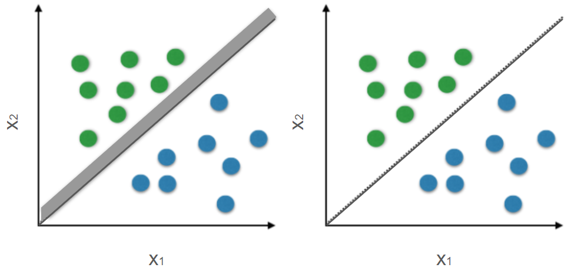
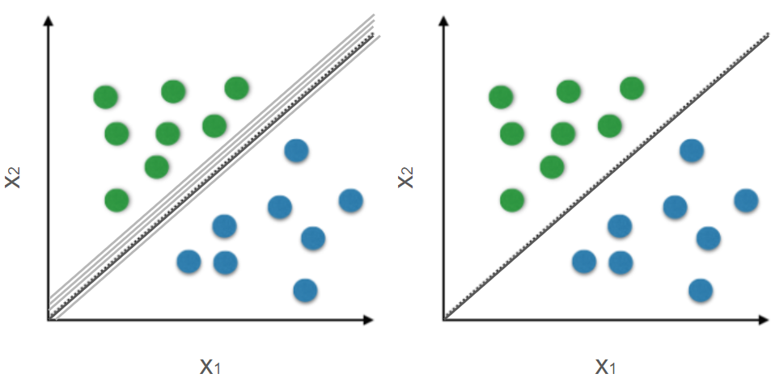
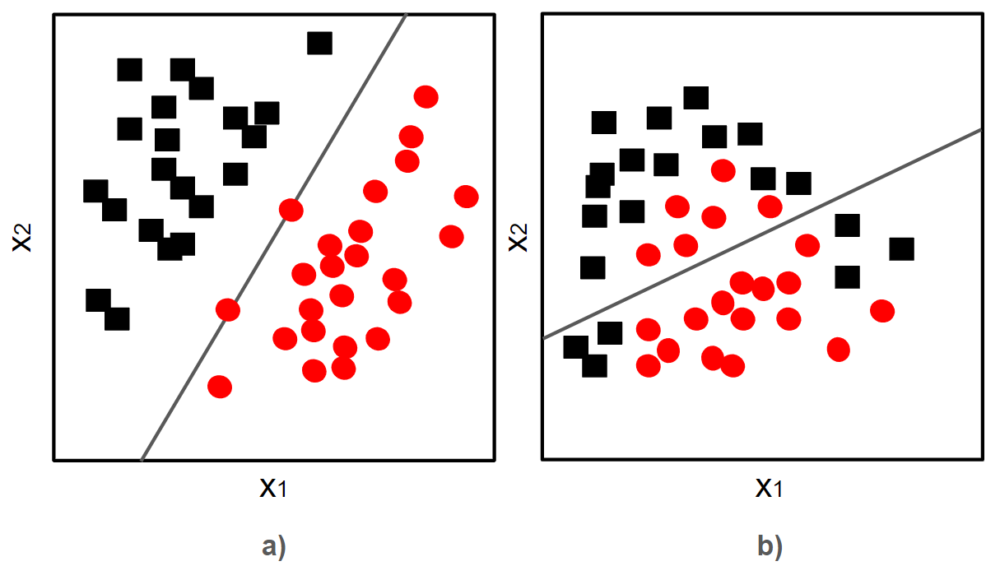

2.2 Perceptron#
A representação genérica do Perceptron, inspirada no modelo de neurônio proposto por Warren McCulloch e Walter Pitts [McCulloch and Pitts, 1943], é ilustrada na Figura 2.3. Segundo esta representação, podemos observar cico elementos básicos: (i) à esquerda, uma camada composta por \(n\) receptores, responsáveis por receber as informações sinápticas \(x_{1}...,x_{n}\); (ii) um conjunto de conexões sinápticas, que pondera as informações de entrada segundo os pesos \(w_{1}...,w_{n}\); (iii) uma entrada constante e igual a +1, ponderada por \(w_{0}\); (iv) no núcleo do neurônio, um concentrador (i.e., uma soma \(∑\)) dis sinais de entrada que induz um campo sináptico e repassa para; (v) a função de ativação \(g\), a qual é responsável por gerar uma resposta.

Com base nos elementos do modelo introduzidos, é formalizado um método capaz de realizar classificação de realizar classificação de padrões. Para tal, considere um problema linearmente separável que envolve duas classes e no qual é conhecido um conjunto de observações \(D = \{(\textbf{x}_{i},y_{i})\in \textit{X} \times \textit{Y}:i=1,...,m\}\). Segundo esta notação, temos que \(\textbf{x}_{i}\) está associado exclusimamente à \(𝜔_{1}\) ou \(𝜔_{2}\) quando \(y_{i}\) equivale a +1 ou -1, respectivamente.
Para fins de simplicação das discussões, consideremos ainda que o problema de classificação será conduzido sobre um espaço de atributos estendido, isto é, \(\textbf{x} = [1,x_{1},...,x_{n}]^{T} \in χ \subseteq \mathbb{R}^{n+1}\), fazendo com que as funções discriminantes sejam reduzidas à forma:
\(\begin{equation} g(\textbf{x}) = \textbf{w}^{T} \textbf{x} \tag{2.3} \end{equation}\)
com \(\textbf{w}=[𝜔_{0},𝜔_{1},...,𝜔_{n}]^{T}\).
Nessas condições, o método Perceptron busca pelo \(\textbf{w}\) que proporciona \(g(\textbf{x}_{i})>0\), se \(y_{i} = +1\), e \(g(\textbf{x}_{i})<0\) se \(y_{i} = -1\), para \(i=1,...,m\). Uma solução para este problema pode ser alcançanda através da minimização da seguinte função:
\(\begin{equation} J(\textbf{w}) = \sum_{i=1}^{m} (δ(\textbf{x}_{i},\textbf{w})\textbf{w}^{T}\textbf{x}_{i}); δ(\textbf{x}_{i};\textbf{w}) = \left \{ \begin{matrix} -1, \ se \ y_{i} = +1 \ e \ \textbf{w}^{T} \textbf{x}_{i} < 0 \\ +1, \ se \ y_{i} = -1 \ e \ \textbf{w}^{T} \textbf{x}_{i} > 0 \\ 0, \ caso \ contrário \ \end{matrix}\right. \tag{2.4} \end{equation}\)
Vale notar que \(δ(\textbf{x};\textbf{w})\) atua como “função penalizadora” no processo de treinamento do Perceptron. A aplicação da pena ocorre de acordo com o parâmetro atual \textbf{w}. Consequentemente, teremos \(J(\textbf{w})=0\) quando obtivemos \(\textbf{w}\) tal que \(δ(\textbf{x}_{i},\textbf{w})=0\) para \(i=1,...,m\), o que implica nenhuma penalização por erro de classificação durante o processo de treinamento.
A minimização de \(J(\textbf{w})\) pode ser realizada com uso do algoritmo Gradiente Descendente. Através desta estratégia iterativa, são obtidas atualizações sucessivas para \(\textbf{w}\). Denotando por \(\textbf{w}^{(k)}\) a k-ésima aproximação obtida para \(\textbf{w}\), temos:
\(\begin{equation} \textbf{w}^{(k+1)}=\textbf{w}^{(k)}-η_{k}\frac{\partial J(\textbf{w})}{\partial\textbf{w}}\left|\begin{matrix} _{\textbf{w}=\textbf{w}^{(k)}}\end{matrix}\right. \tag{2.5} \end{equation}\)
em que \(η_{k} \in\mathbb{R}_{+}\) é um fator de correção que controla a atualização de \(\textbf{w}^{(k)}\). Com relação a \(\textbf{w}^{(0)}\), os valores das componentes podem ser inicializados de forma aleatória ou mesmo nula.
Uma vez que \(\frac{\partial J(\textbf{w})}{\partial\textbf{w}} = \frac{\partial (\sum_{i=1}^{m}(δ(\textbf{x}_{i};\textbf{w})\textbf{w}^{T}\textbf{x}_{i}))}{\partial\textbf{w}} = \sum_{i=1}^{m}(δ(\textbf{x}_{i};\textbf{w})\textbf{x}_{i} \), a Equação 3 é reescrita por:
\(\begin{equation} \textbf{w}^{(k+1)}=\textbf{w}^{(k)}-η_{k}\sum_{i=1}^{m}(δ(\textbf{x}_{i};\textbf{w})\textbf{x}_{i} \tag{2.6} \end{equation}\)
Após um número finito de iterações, o algortimo Perceptron deve convergir. Cabe ressaltar que a convergência ocorrerá desde que a sequência de fatores \(\{ η_{k}\}_{k=0}^{∞}\) seja tal que \(\lim_{k→∞}\sum_{j=0}^{k}η_{j}^{2} < ∞\) e \(\lim_{k→∞}\sum_{j=0}^{k}η_{j} → ∞\). Uma escolha usual para este fator, e que respeita as condições apontadas, é \(η_{k}=\frac{z}{k+1}\), com \(z>1\). Por fim, uma vez alcançada a convergência, o processo de classificação é dado de modo similar à regra estabelecida na equação 2.2.
Como consequência do comportamento de \(δ(\cdot;\cdot)\), a função objetivo que caracteriza o treinamento do Perceptron torna-se linear por partes. Este comportamento possibilita que diferentes configurações de valores (i.e., pares da região central) de pesos sinápticos proporcionem a minimização de função objetivo.
A Figura 2.4 apresenta a aplicação do algoritmo Perceptron sobre um conjunto de dados linearmente separáveis. As superfícies de decisão obtidas ao longo das iterações são identificadas pelas retas em tons claros no gráfico da esquerda, para as quais é observado um movimento de convergência em direção a uma solução. O resultado final de separação é apresentado no gráfico da direita.

Uma implementação do método Perceptron, segundo os elementos introduzidos nesta seção, é dada pela função \(\mathbb{perceptron}\) apresentada no Código 2.1. Nesta implementação, são verificadas outras duas funções \(\mathbb{eta\_update}\) e \(\mathbb{delta\_check}\), responsáveis pela atualização da taxa de aprendizado e pelo cálculo de \(δ(\cdot;\textbf{w})\). Ainda, uma vez obtido \(\textbf{w}\), a predição do indicador de classe (i.e., +1 ou -1) pode ser efetuada com uso da função (\(\mathbb{predictor\_perceptron}\)). Tais funções estão contidas no Código 2.2.
#Importações
import random
import numpy as np
#Código 2.1
def perceptron(x,y):
dim = x.shape[1] #Dimensão do espaço de atributos
k = 0 #Contador de iteração
z = 1 #Usado no ajuste da taxa de aprendizado
#Inicializa aleatoriamente w no espaço estendido
w = np.random.normal(0,1,dim+1) #Distribuição N(0,1)
#Inicialização da taxa de aprendizado
eta = eta_update(z,k)
while True:
S = np.zeros(3) #Contabiliza desvio dos casos errados
count = 0 #Conta casos errados
for xi, yi in zip(x,y):
if delta_check(xi,yi,w) * w.dot(np.hstack((1,xi))) > 0:
S += delta_check(xi,yi,w)*np.hstack((1,xi))
if delta_check(xi,yi,w) != 0: count += 1
#Atualização das variáveis
w0 = np.copy(w) #Faz uma cópia de w para comparação
w = w - eta * S #Atualiza w
#Reinicia a taxa de aprendizado caso não convirja
#Força um retorno de "eta" para 1
if np.linalg.norm(w0-w) < 10**-4: z = k+1
eta = eta_update(z,k) #Atualização do "eta"
k += 1
if (count==0): break #Obteve a separação linear!
return w #O retorno consiste no valor de pesos w
#Código 2.2
#Expressão usada na utilização da taxa de aprendizado
def eta_update(z,k):
return z/(k+1)
#Verificação de erro/acerto e respectiva penaização
def delta_check(x,y,w):
if (y>0) and (w.dot(np.hstack((1,x))) < 0): return -1
if (y<0) and (w.dot(np.hstack((1,x))) > 0): return +1
return 0
#Função de predição da classe de x segundo o vetor w
def perceptron_predict(x,w):
if (w.dot(np.hstack((1,x)))>0): return 1
else: return -1
Perceptron sequencial#
Segundo as discussões na seção anterior, o algoritmo Perceptron realiza a busca por \(\textbf{w}\) de forma iterativa. Diante da Equação 3.6, podemos verificar que a correção de \(\textbf{w}\) é guiada por \(\sum_{i=1}^{m}δ(\textbf{x}_{i};\textbf{w})\textbf{x}_{i}\) após a aplicação da função \(δ(⋅;⋅)\) sobre todos os \(\textbf{x}_{i}\) em \(D\). Como variante desta formulação original, o processo de atualização pode ser conduzido ao passo que cada observação é apresentada, ou seja:
\(\begin{equation} \textbf{w}^{(k+1)} = \textbf{w}^{(k)} - η_{k}δ(\textbf{x}_{i};\textbf{w}^{(k)}) \tag{2.7} \end{equation}\)
Nesta proposta, a atualização de \(\textbf{w}^{(k+1)}\) ocorre somente quando a função \(δ(\textbf{x}_{i};\textbf{w}^{(k)})\), diante da parametrização atual representada por \(\textbf{w}^{(k)}\), identifica um erro de classificação, já que a parcela \(η_{k}δ(\textbf{x}_{i};\textbf{w}^{(k)})\) se torna nula diante das classes apresentadas sucessivamente através de ciclos. Com relação à inicialização \(\textbf{w}^{(0)}\) e atualização de \(η_{k}\), podem ser adotados os mesmos critérios antes discutidos.
Analogamente à seção anterior, a Figura 2.5 apresenta o processo de obtenção da superfície de decisão através do algoritmo Perceptron, porém atualizado de forma sequencial. Em comparação com a versão anterior, nota-se um menor número de iterações exigidas, pois há uma menor concentração de superfícies testadas (representadas pelas linhas claras e finas). No entanto, é válido ressaltar que este é um comportamento que pode estar relacionado à disposição dos padrões.

Aplicação sobre dados não linearmente separáveis#
Apesarda suposição inicial de separabilidade linear dos dados, sobre a qual o algoritmo Perceptron foi construído, sua aplicação sobre dados não linearmente separáveis é possível na condição de tolerância à ocorrência de erros de classificação. Para esse fim, é adotada uma estratégia de relaxamento até que a convergência seja atingida.
As seguintes etapas abrangem: este processo:
Inicialize os contadores \(q\), \(q^{*}\), \(k←0\) Inicialize \(\textbf{w}^{(0)}\) e \(\textbf{w}^{*}\) Enquanto não convergir (erro nulo ou máximo de iterações), repita:
Aplique \(g(\textbf{x})=\textbf{w}^{(k)^{T}}\) sobre cada \(\textbf{x}_{i}\) em \(D\)
\(q ←\) número de acertos utilizando \(\textbf{w}^{(k)}\)
Se \(q > q^{*}\) então:
\(q^{*} ← q\)
\(\textbf{w}^{*} ← \textbf{w}^{(k)}\)
k \(←\) k+1
\(\textbf{w}^{(k+1)} - η_{k}δ(\textbf{x}_{i};\textbf{w}_{(k)})\)
Atualize k \(←\) k + 1
O desempenho desta estratégia é verificado através da aplicação mostrada na Figura 2.6. Para dados linearmente separáveis, tal estratégia é reduzida à versão original do algoritmo. Por outro lado, na condição de dados não linearmente separáveis, o algoritmo termina ao atingir um número máximo de iterações, e a solução é dada pela configuração de \(\textbf{w}\) que proporciona maior acurácia entre todos os testes efetuados.
